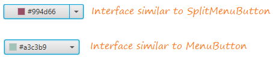
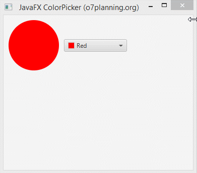
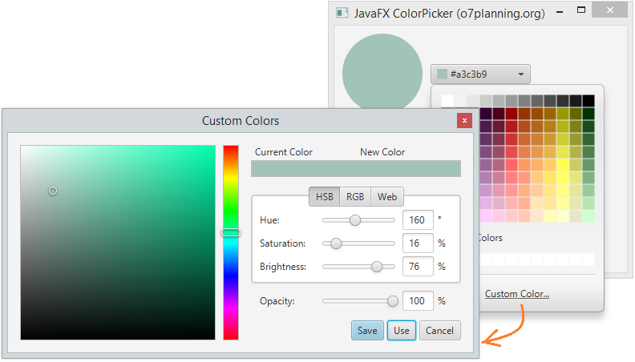
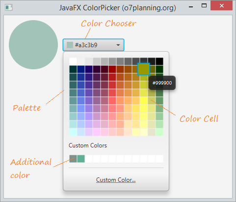
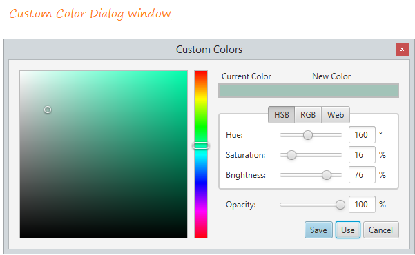

ColorPicker li permet a l’usuari triar un color d’un conjunt de colors determinat o fer el seu propi color personalitzat. Es pot establir un Color inicial usant la funció setValue() o definint-lo en un constructor. El color seleccionat per l’usuari es pot trobar usant la funció getValue ().
Es genera un esdeveniment d’Acció quan l’usuari selecciona un color del selector de color. Aquest esdeveniment pot manejar-se usant un controlador d’esdeveniments.
L’aparença de ColorPicker es pot controlar de

Els constructors de la classe són:
Mètodes d’ús comú:

El color es pot personalitzar:

A continuació es poden elegir els components del ColorPicker:

Per la personalització del color:

fer exemple: https://o7planning.org/en/11135/javafx-colorpicker-tutorial